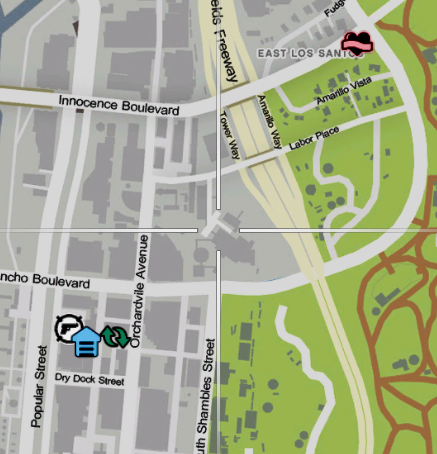

Scrapping crowbars is a good way to turn crowbars that you don't need into steel that can later be sold either at the warehouse or to mechanics. Better yet you can craft stuff with it too.
1. Make sure you have a Crowbar on you
2. Head down to the smeltery
Picture of the location on a map:

What you get from it:
- 1x Crowbar turns into 2x Steel
Once you got your materials, enjoy! You can return to the main website with the button located at the top left. Or click here!